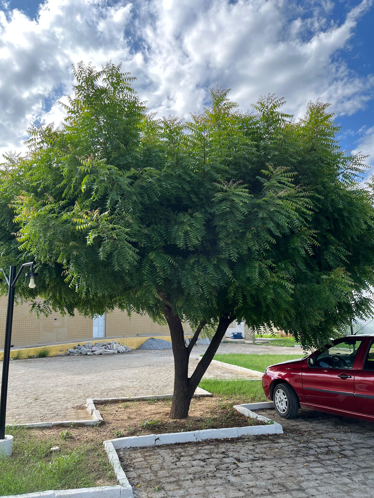
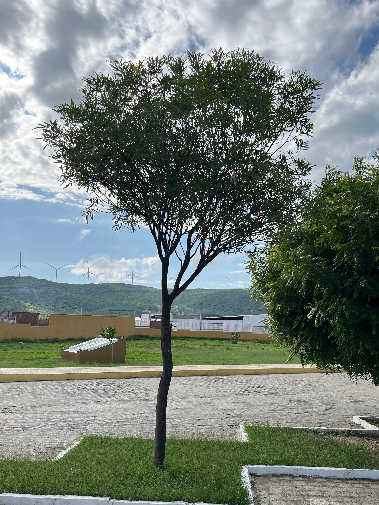
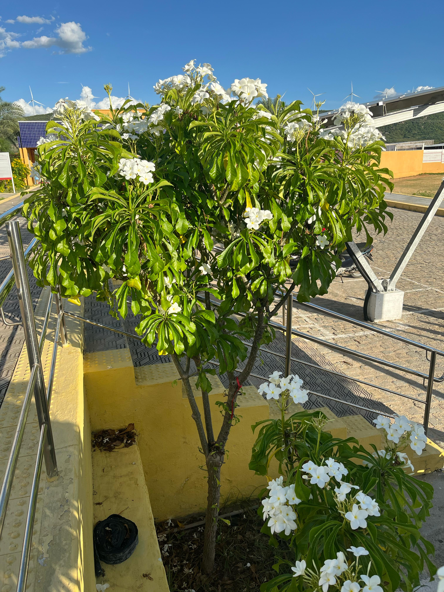

<!DOCTYPE html>
<html lang="en">
<head>
    <meta charset="UTF-8">
    <meta name="viewport" content="width=device-width, initial-scale=1.0">
    <title>Setor 2: Estacionamento do Descanso Verde</title>
    <link rel="stylesheet" href="pi.css">
</head>
<body>
    
</body>
</html>
    <a href="pi.html">
        
    </a>
    
<header>
    <div class="header-content">
        <h1> Setor 2: Estacionamento do Descanso Verde</h1>

    </div>
</header>

<main>

    <section class="setor" id="setor2">
        <h2>Explore o Estacionamento do Descanso Verde </h2>
        
        <div class="plant-card">
            
            <div class="card-content">
                <h3>Nim Indiano </h3>
                <p><strong>Nome Científico:</strong> Azadirachta indica </p>
                <p><strong>Família Botânica: </strong>  Meliaceae</p>
                <p style="width: 75%;"><strong>Descrição:</strong> O nim indiano é uma árvore de médio a grande porte, amplamente valorizada no paisagismo por sua resistência e benefícios ecológicos. Suas folhas verdes e densas garantem sombra abundante. Além de seu valor ornamental, a árvore é conhecida por suas propriedades naturais repelentes de pragas e pelo uso medicinal de suas folhas e sementes.</p>
            </div>
        </div>

       
        <div class="plant-card">
            
            <div class="card-content">
                <h3> Caibrera</h3>
                <p><strong>Nome Científico:</strong> Tabebuia Aurea</p>
                <p><strong>Família Botânica: </strong>  Meliaceae</p>
                <p style="width: 75%;"><strong>Descrição:</strong> É uma árvore de porte médio a grande, nativa das regiões tropicais e subtropicais. Caracteriza-se por sua folhagem densa e perene, composta por folhas coriáceas de tonalidade verde intensa, que proporcionam sombra abundante. A caibrera é uma espécie resistente, adaptando-se bem a diferentes tipos de solo e condições climáticas, o que a torna ideal para ser cultivada em uma ampla variedade de ambientes</p>
            </div>
        </div>

        <div class="plant-card">
            
            <div class="card-content">
                <h3> Jasmim-do-Caribe</h3>
                <p><strong>Nome Científico:</strong> Palmeira Pudica</p>
                <p><strong>Família Botânica: </strong>  Apocynaceae</p>
                <p style="width: 75%;"><strong>Descrição:</strong> O jasmim-do-Caribe, também conhecido como palmeira-pudica, é uma planta ornamental de crescimento moderado e aparência sofisticada, muito valorizada em projetos de jardinagem e design de áreas verdes.  Além de seu apelo estético, a planta se destaca pela fácil manutenção e adaptação a diferentes condições climáticas e tipos de solo.</p>
            </div>
        </div>

    </section>    

</main>